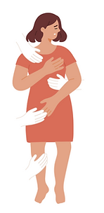
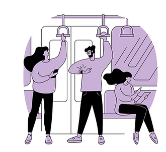

87%Des femmes harcelées dans les transports
Ont déjà été harcelées au moins une fois dans les transports en commun.
Étude Harris Interactive pour Uber, mai 2019À propos de Drive Lady
Drive Lady est une web-app de covoiturage 100% entre femmes. Profils vérifiés, récapitulatif clair, communauté bienveillante — pour tous les trajets où la confiance compte.
Pourquoi Drive Lady

87%Ont déjà été harcelées au moins une fois dans les transports en commun.
Étude Harris Interactive pour Uber, mai 2019
1/2Se sent en insécurité lors d'un trajet et arrête d'utiliser les transports à une certaine heure.
Enquête ONDRP, 2018Se sentent plus en sécurité lorsqu'elles voyagent entre femmes.
Enquête Neoma Conseils, 2024Partenaires
Concert, bar, festival ou soirée… ces partenaires permettent à leurs clientes de rentrer sereinement avec Drive Lady.